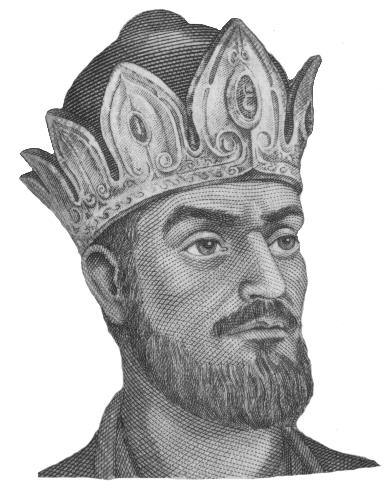
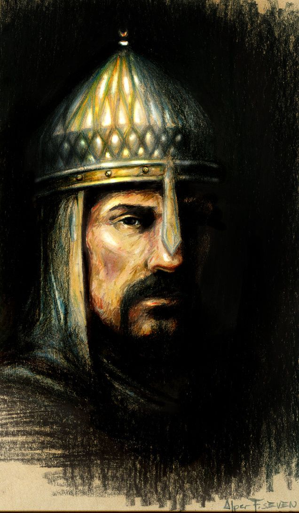
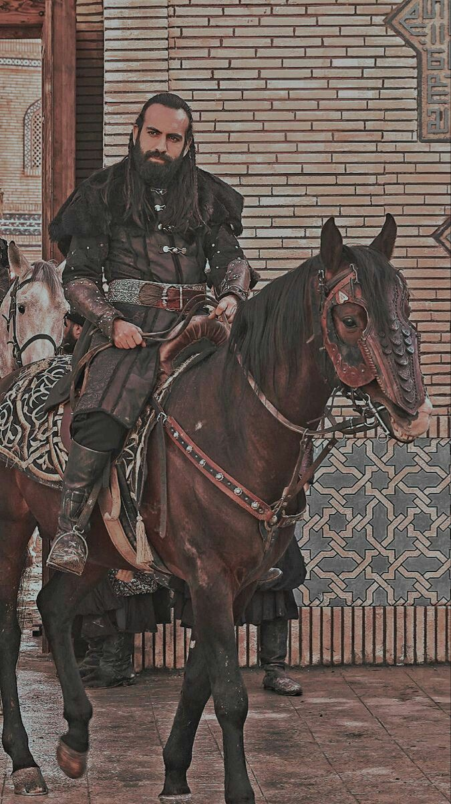
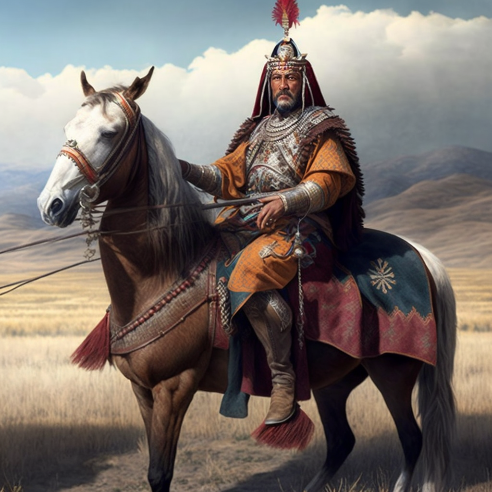
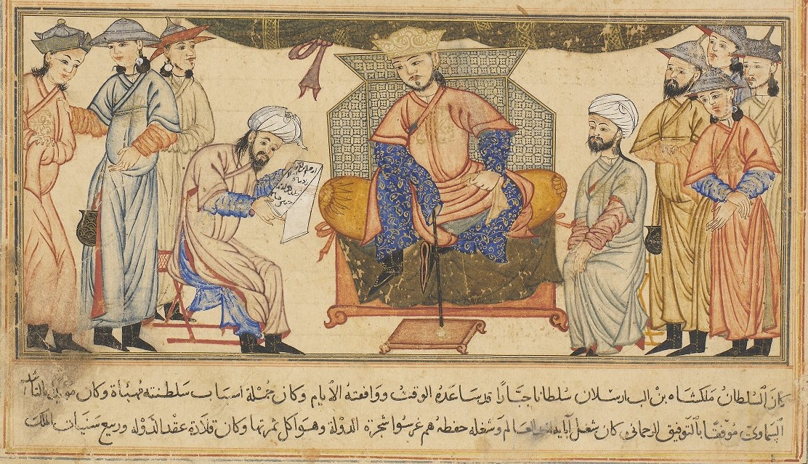
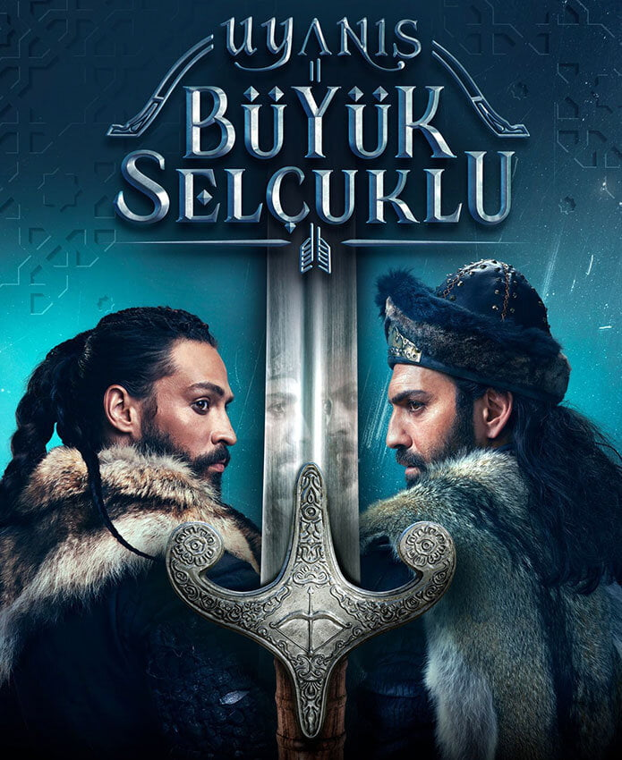
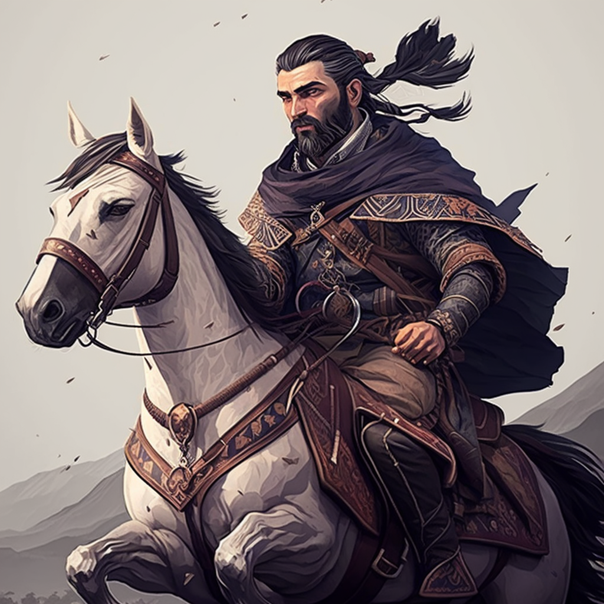
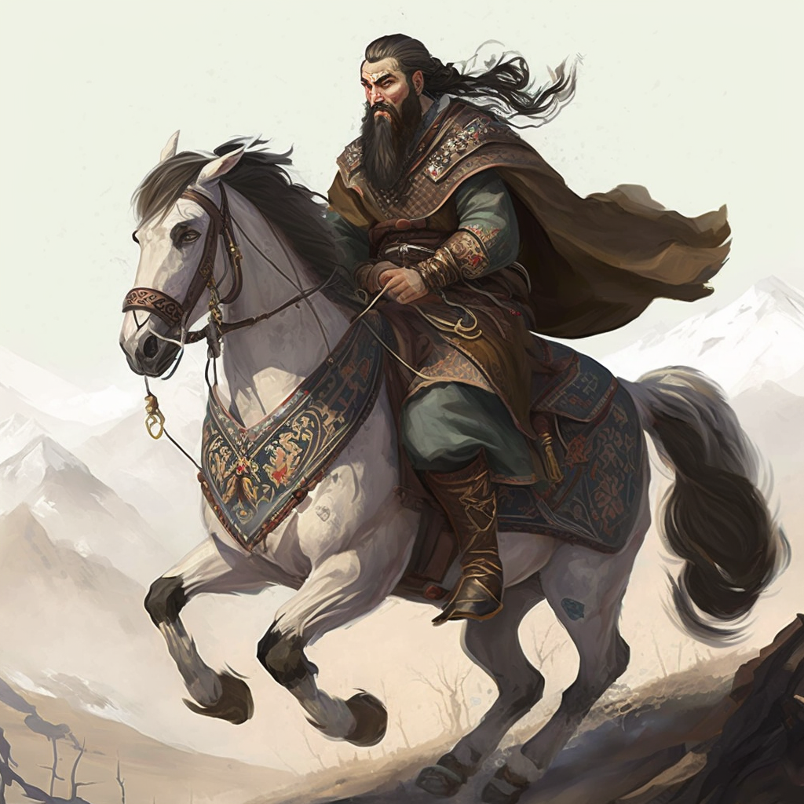
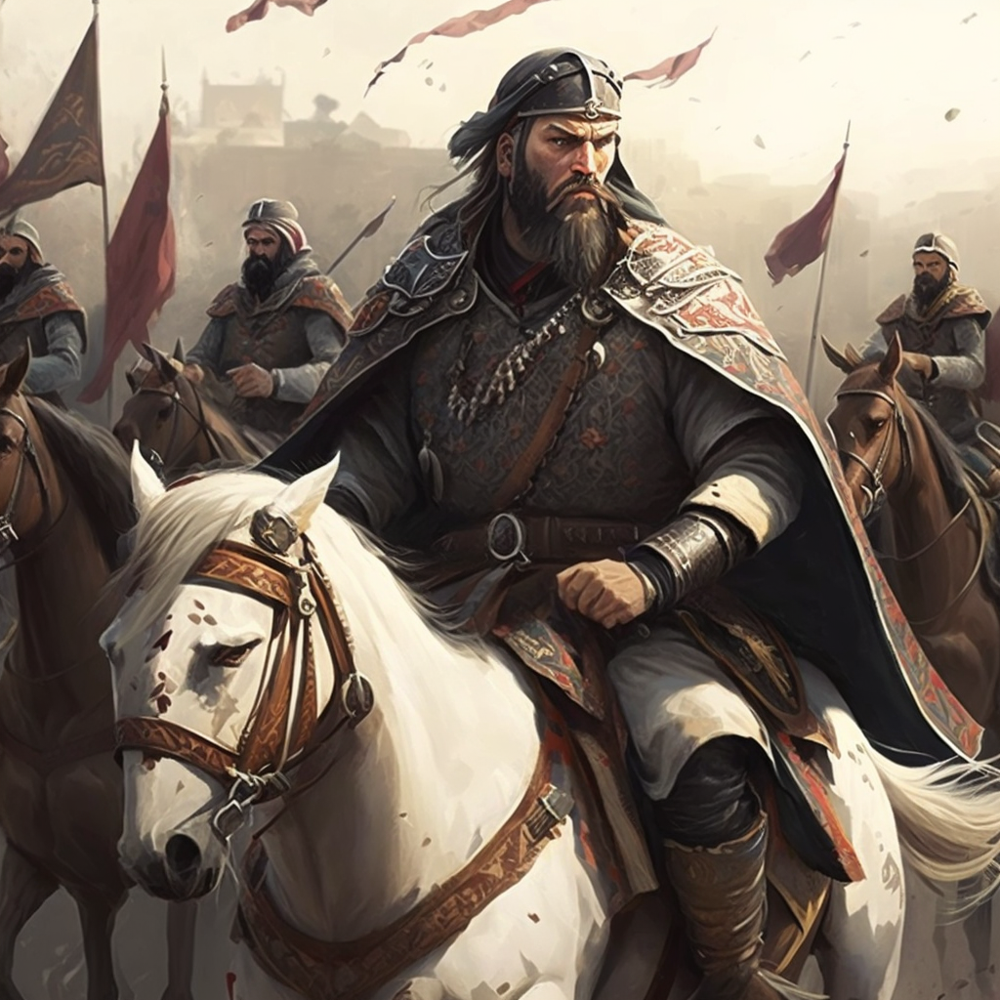

Some notable Seljuk Sultans (Rulers)

Source: Google
Tughril I (r.1037-1063)
First Sultan of the Seljuk Empire. Led a military campaign into the region of Khwarezm, where he and his followers gained a reputation as skilled and fearless warriors.

Source: Google
Alp Arslan (r.1063-1072)
He is best known for his victory over the Byzantine Empire at the Battle of Manzikert in 1071, which paved the way for Seljuk expansion into Anatolia.

Source: Uyanis Buyuk Seljuk, Turkish Show
Malik Shah I (r.1072-1092)
He oversaw the height of the Seljuk Empire's power and is credited with expanding its territory into Persia, Central Asia, and the Levant.

Source: Midjourney AI
Kilij Arlsan II (r.1155-1192)
Kilij Arslan II was the sultan of the Seljuk Empire from 1155 to 1192. He is best known for his role in the Battle of Myriokephalon, where he defeated the Byzantine Empire and prevented their expansion into Anatolia.
The Height and the Decline
At its height, the Seljuk Empire spanned a vast territory that extended from Central Asia in the east to Anatolia and the Levant in the west. The Seljuks established their rule over much of the Iranian plateau, including parts of modern-day Iran, Iraq, Afghanistan, Turkmenistan, and Uzbekistan. They also expanded into Anatolia (modern-day Turkey), where they founded the Sultanate of Rum, and into the Levant, where they established the Seljuk Sultanate of Syria.
The Seljuk Empire reached the height of its power under the rule of Sultan Malik Shah I, who oversaw the expansion of the empire into parts of Central Asia and the Caucasus. However, after his death in 1092, the empire began to decline due to internal power struggles and external pressures from the Crusaders and other neighboring empires.

Seljuk Empire under Sultan Malik Shah I, circa 1090. Source: Wikipedia
By the 12th century, the Seljuk Empire had fragmented into a number of smaller states, including the Sultanate of Rum, the Seljuk Sultanate of Syria, and the Khwarazmian Empire.
Malik Shah I had several sons, and after his death, there was a struggle for the throne among them. The eldest son, Barkiyaruq, was initially recognized as the new sultan, but his authority was challenged by his younger brothers, who each established their own independent realms. This led to a period of civil war and conflict, as the Seljuk princes fought for control of various parts of the empire.
In addition to the internal conflicts, the Seljuks faced external threats from neighboring empires and kingdoms. The Byzantine Empire, for example, took advantage of the Seljuk fragmentation to expand its territory in Anatolia, while the Crusaders launched a series of invasions into the Levant, which weakened the Seljuk hold on the region.
The fragmentation of the Seljuk Empire led to the emergence of several independent Seljuk states, including the Sultanate of Rum in Anatolia and the Seljuk Sultanate of Syria. These states continued to play an important role in the politics of the region for several centuries, but they never regained the power and influence that the Seljuk Empire had enjoyed under Malik Shah I.

Inagural Scene of Malik Shah I. Source: Wikipedia
Modern-Day Sentiments
There have been several Turkish TV series that focus on the Seljuk Empire and its history, culture, and legacy. One of the most popular and well-known series is "Uyanış: Büyük Selçuklu," also known as "The Great Seljuks: Guardians of Justice," which premiered in 2020. The series focuses on the reign of Sultan Melikşah, one of the most powerful Seljuk sultans, and his struggle to maintain the unity and power of the Seljuk Empire against various internal and external threats.
The series has been widely popular in Turkey and other parts of the world, as it provides an engaging and dramatized look at the history and culture of the Seljuk Empire, its people, and its rulers. It has also sparked renewed interest in the history of the Seljuks and helped to promote greater awareness and appreciation of their contributions to the region and to Islamic civilization as a whole.

The series has received generally positive reviews from audiences and critics alike. It has been praised for its high production values, including its elaborate sets, costumes, and special effects, as well as its engaging storyline and well-developed characters.
"Uyanış: Büyük Selçuklu" has also been successful in terms of its ratings and popularity. The show has been widely watched in Turkey and other parts of the world, and has been credited with helping to raise awareness of the history and culture of the Seljuk Empire among a new generation of viewers.
However, the series has also faced criticism, particularly with regard to its historical accuracy. Some historians have pointed out that the show takes certain liberties with the historical record, and that it portrays certain events and characters in a way that is not entirely accurate or faithful to the source material.
Despite these criticisms, the series has been widely praised for its role in promoting interest and appreciation of the history and culture of the Seljuk Empire, and for its contributions to the ongoing conversation about the importance of preserving and celebrating the rich legacy of Islamic civilization.
What would have made this even more interesting to me is if we got an anime series about the Seljuks. How cool would it be seeing Alp Arslan during the Battle of Manzikert in anime form! And we got that Demon Slayer level animation quality!
Below are a few AI generated images in anime-esque artstyle. Just imagine if we got a whole series looking like this!


